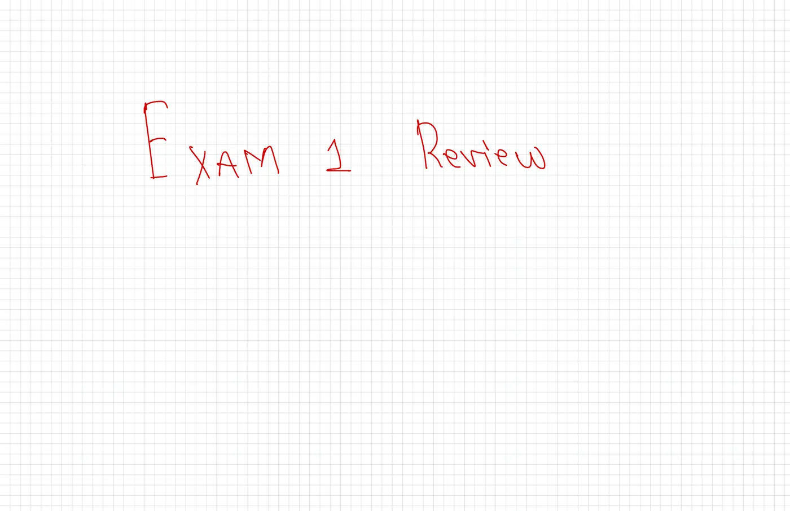
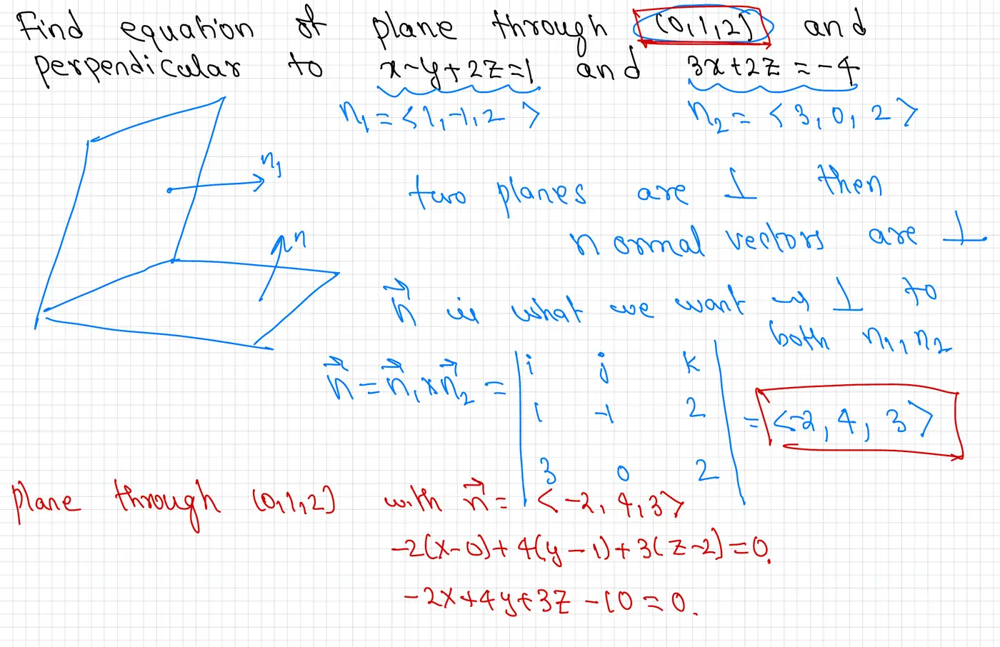
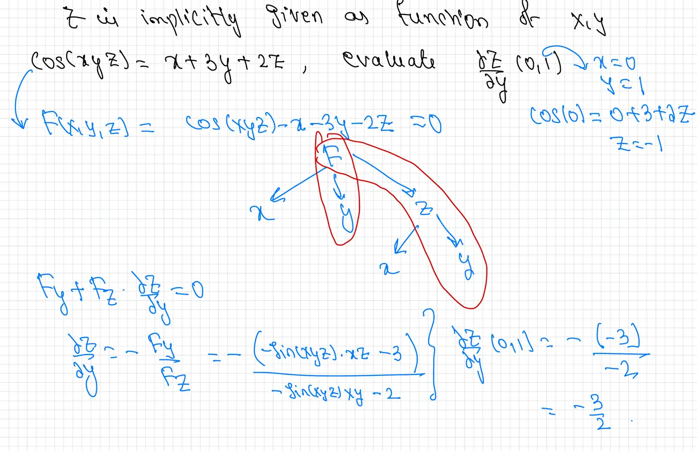
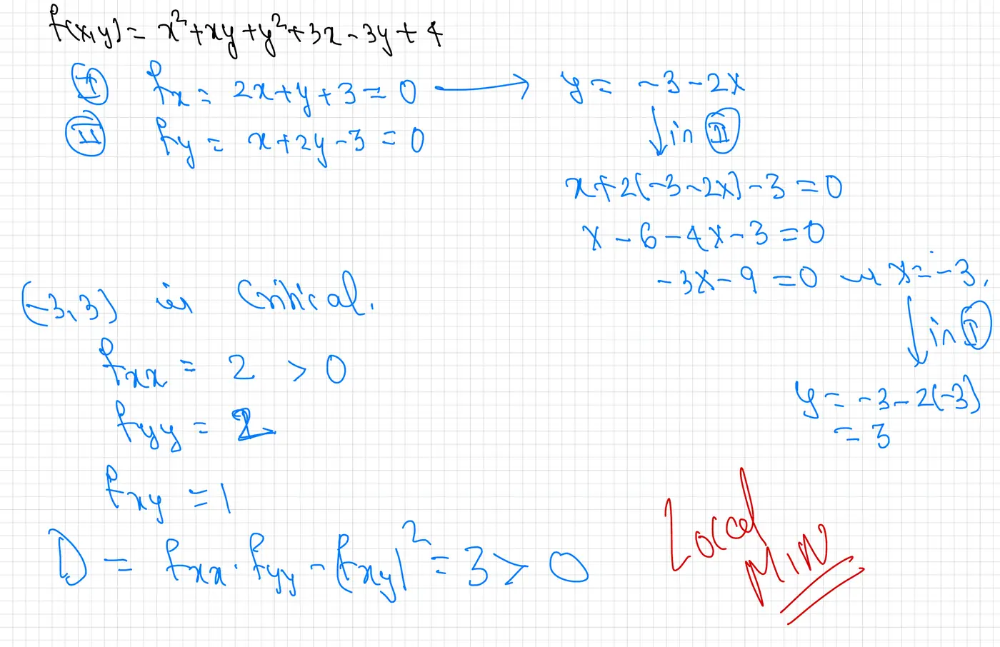
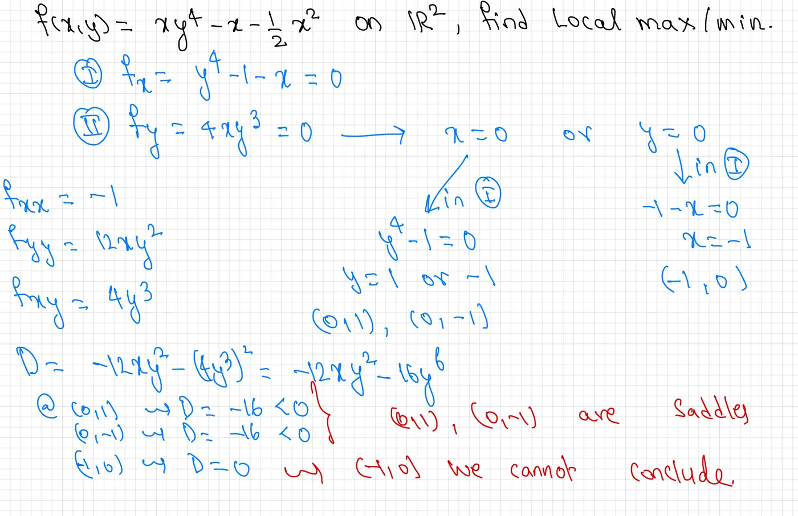
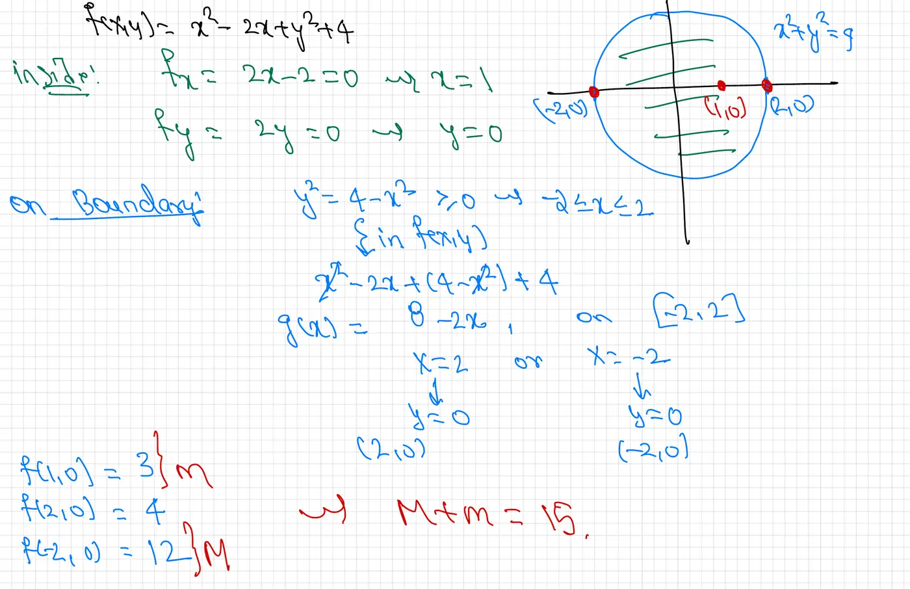
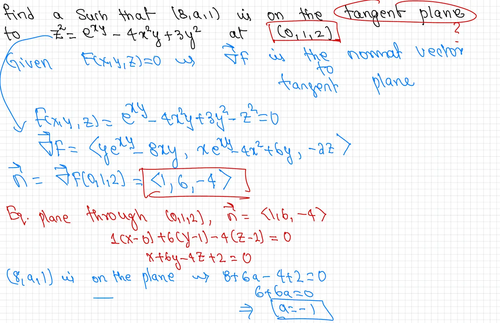
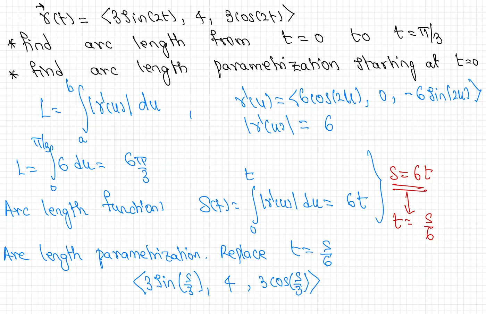
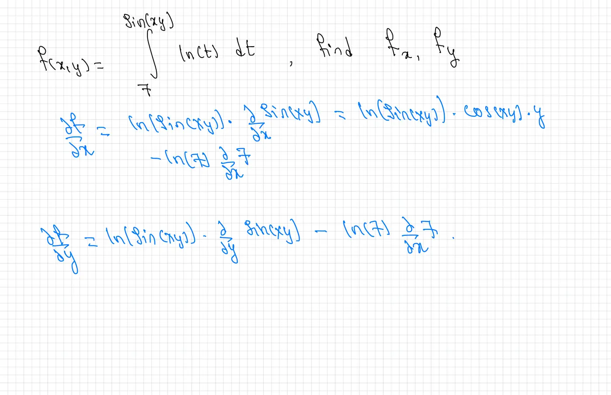
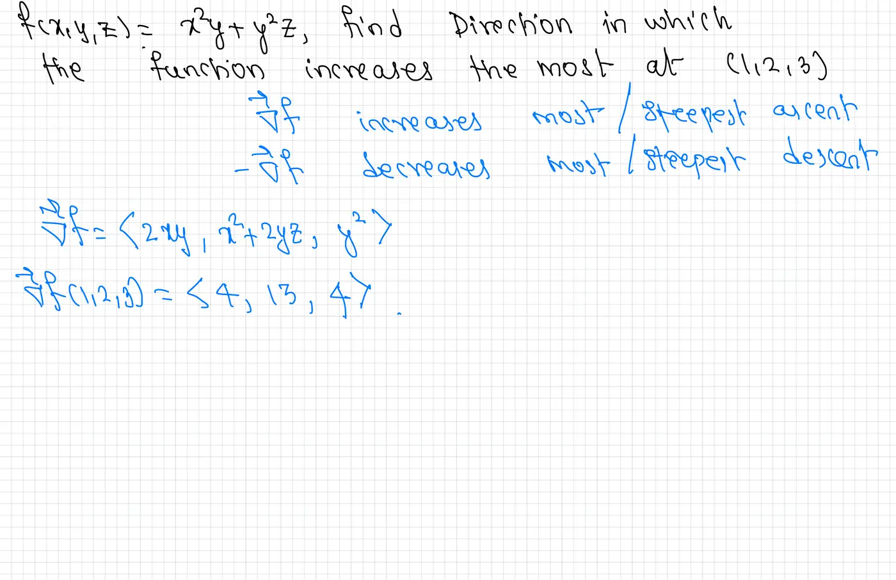

Title Page
This page contains the title: Exam 1 Review, written in red handwriting on graph paper.
Accessible HTML conversion of handwritten Exam 1 Review notes. Each page shows the original handwritten image followed by a screen-reader-compatible conversion.

This page contains the title: Exam 1 Review, written in red handwriting on graph paper.

Find the equation of the plane through the point \((0, 1, 2)\) and perpendicular to both \(x - y + 2z = 1\) and \(3x + 2z = -4\).
Solution:
The normal vectors to the given planes are read from their coefficients:
\[\vec{n}_1 = \langle 1, -1, 2 \rangle \qquad \vec{n}_2 = \langle 3, 0, 2 \rangle\]Key Idea: If two planes are perpendicular, their normal vectors are also perpendicular. The normal vector \(\vec{n}\) of our desired plane must be perpendicular to both \(\vec{n}_1\) and \(\vec{n}_2\). We therefore use the cross product \(\vec{n} = \vec{n}_1 \times \vec{n}_2\).
Computing the cross product via the determinant formula:
\[\vec{n} = \vec{n}_1 \times \vec{n}_2 = \begin{vmatrix} \vec{i} & \vec{j} & \vec{k} \\ 1 & -1 & 2 \\ 3 & 0 & 2 \end{vmatrix} = \langle (-1)(2)-(2)(0),\; (2)(3)-(1)(2),\; (1)(0)-(-1)(3) \rangle = \langle -2, 4, 3 \rangle\]Writing the equation of the plane through \((0, 1, 2)\) with normal \(\vec{n} = \langle -2, 4, 3 \rangle\):
\[-2(x - 0) + 4(y - 1) + 3(z - 2) = 0\] \[-2x + 4y + 3z - 10 = 0\]Diagram Description: A three-dimensional sketch shows two intersecting planes. Normal vectors \(\vec{n}_1\) and \(\vec{n}\) are drawn as arrows emanating from the planes. The cross product vector \(\vec{n}\) is perpendicular to both planes, illustrating why it serves as the normal for the desired plane.

Given \(\cos(xyz) = x + 3y + 2z\), where \(z\) is implicitly a function of \(x\) and \(y\), evaluate \(\dfrac{\partial z}{\partial y}\) at the point \((0, 1)\).
Solution:
First, find \(z\) at \((x, y) = (0, 1)\). Substituting:
\[\cos(0) = 0 + 3(1) + 2z \implies 1 = 3 + 2z \implies z = -1\]Define \(F(x, y, z) = \cos(xyz) - x - 3y - 2z = 0\). The implicit differentiation formula gives:
\[\frac{\partial z}{\partial y} = -\frac{F_y}{F_z}\]This arises from differentiating \(F = 0\) with respect to \(y\) and applying the chain rule: \(F_y + F_z \cdot \dfrac{\partial z}{\partial y} = 0\).
Computing the partial derivatives of \(F\):
\[F_y = -\sin(xyz) \cdot xz - 3\] \[F_z = -\sin(xyz) \cdot xy - 2\]Therefore:
\[\frac{\partial z}{\partial y} = -\frac{-\sin(xyz) \cdot xz - 3}{-\sin(xyz) \cdot xy - 2}\]Evaluating at \((x, y, z) = (0, 1, -1)\):
\[\frac{\partial z}{\partial y}\bigg|_{(0,1)} = -\frac{-\sin(0)\cdot(0)(-1) - 3}{-\sin(0)\cdot(0)(1) - 2} = -\frac{0 - 3}{0 - 2} = -\frac{-3}{-2} = -\frac{3}{2}\]
For \(f(x, y) = x^2 + xy + y^2 + 3x - 3y + 4\), find and classify all critical points.
Solution:
Set both partial derivatives to zero:
\[f_x = 2x + y + 3 = 0 \tag{I}\] \[f_y = x + 2y - 3 = 0 \tag{II}\]From (I): \(y = -3 - 2x\). Substituting into (II):
\[x + 2(-3 - 2x) - 3 = 0 \implies x - 6 - 4x - 3 = 0 \implies -3x - 9 = 0 \implies x = -3\]Then \(y = -3 - 2(-3) = 3\). The only critical point is \((-3, 3)\).
Apply the Second Derivative Test:
\[f_{xx} = 2, \qquad f_{yy} = 2, \qquad f_{xy} = 1\] \[D = f_{xx}f_{yy} - (f_{xy})^2 = (2)(2) - (1)^2 = 3 > 0\]Since \(D > 0\) and \(f_{xx} = 2 > 0\), the point \((-3, 3)\) is a local minimum.
Second Derivative Test: At a critical point \((a,b)\), let \(D = f_{xx}f_{yy} - (f_{xy})^2\). If \(D > 0\) and \(f_{xx} > 0\): local minimum. If \(D > 0\) and \(f_{xx} < 0\): local maximum. If \(D < 0\): saddle point. If \(D = 0\): test is inconclusive.

Find all local maxima and minima of \(f(x,y) = xy^4 - x - \tfrac{1}{2}x^2\) on \(\mathbb{R}^2\).
Solution:
Set partial derivatives to zero:
\[f_x = y^4 - 1 - x = 0 \tag{I}\] \[f_y = 4xy^3 = 0 \tag{II}\]From (II): \(x = 0\) or \(y = 0\).
Case 1 (\(x = 0\)): Substituting into (I): \(y^4 - 1 = 0 \implies y = \pm 1\). Critical points: \((0,1)\) and \((0,-1)\).
Case 2 (\(y = 0\)): Substituting into (I): \(-1 - x = 0 \implies x = -1\). Critical point: \((-1, 0)\).
Compute second partials and the discriminant:
\[f_{xx} = -1, \qquad f_{yy} = 12xy^2, \qquad f_{xy} = 4y^3\] \[D = f_{xx}f_{yy} - (f_{xy})^2 = (-1)(12xy^2) - (4y^3)^2 = -12xy^2 - 16y^6\]Evaluating \(D\) at each critical point:
At \((0, 1)\): \(D = 0 - 16 = -16 < 0\) → saddle point.
At \((0, -1)\): \(D = 0 - 16 = -16 < 0\) → saddle point.
At \((-1, 0)\): \(D = 0 - 0 = 0\) → test is inconclusive.
Warning: When \(D = 0\), the Second Derivative Test gives no conclusion. The point \((-1, 0)\) requires further analysis beyond the test.

Find the absolute maximum \(M\) and absolute minimum \(m\) on the closed disk \(x^2 + y^2 \leq 4\), and compute \(M + m\).
Solution:
Interior critical point: \((1, 0)\). Since \(1^2 + 0^2 = 1 \leq 4\), it lies inside the disk.
On the boundary, \(y^2 = 4 - x^2\) where \(-2 \leq x \leq 2\). Substituting into \(f\):
\[f = x^2 - 2x + (4 - x^2) + 4 = 8 - 2x =: g(x)\]Since \(g(x) = 8 - 2x\) is linear (and decreasing), its extrema on \([-2, 2]\) occur at the endpoints \(x = 2\) and \(x = -2\), giving points \((2, 0)\) and \((-2, 0)\).
Diagram Description: A circle of radius 2 is drawn centered at the origin. Three candidate points are marked in red: \((-2, 0)\) on the far left of the boundary, \((1, 0)\) in the interior, and \((2, 0)\) on the far right of the boundary. Green arrows on the boundary indicate the gradient direction of \(f\) restricted to the circle.

Find \(a\) such that \((8, a, 1)\) lies on the tangent plane to \(z^2 = e^{xy} - 4x^2y + 3y^2\) at the point \((0, 1, 2)\).
Solution:
Rewrite as a level surface \(F(x, y, z) = 0\):
\[F(x, y, z) = e^{xy} - 4x^2y + 3y^2 - z^2 = 0\]Key Principle: For a level surface \(F(x,y,z) = 0\), the gradient \(\nabla F\) evaluated at a point is the normal vector to the tangent plane at that point.
Compute the gradient:
\[\nabla F = \langle ye^{xy} - 8xy,\; xe^{xy} - 4x^2 + 6y,\; -2z \rangle\]Evaluate at \((0, 1, 2)\):
\[\vec{n} = \nabla F(0,1,2) = \langle (1)e^{0} - 0,\; (0)e^{0} - 0 + 6(1),\; -2(2) \rangle = \langle 1, 6, -4 \rangle\]Equation of the tangent plane through \((0, 1, 2)\) with normal \(\langle 1, 6, -4 \rangle\):
\[1(x - 0) + 6(y - 1) - 4(z - 2) = 0 \implies x + 6y - 4z + 2 = 0\]Since \((8, a, 1)\) lies on this plane:
\[8 + 6a - 4(1) + 2 = 0 \implies 6 + 6a = 0 \implies a = -1\]
Given \(\vec{r}(t) = \langle 3\sin(2t),\; 4,\; 3\cos(2t) \rangle\):
Solution:
Differentiate \(\vec{r}(t)\):
\[\vec{r}'(t) = \langle 6\cos(2t),\; 0,\; -6\sin(2t) \rangle\] \[|\vec{r}'(t)| = \sqrt{36\cos^2(2t) + 0 + 36\sin^2(2t)} = \sqrt{36} = 6\]Arc length:
\[L = \int_0^{\pi/3} |\vec{r}'(u)|\, du = \int_0^{\pi/3} 6\, du = \frac{6\pi}{3} = 2\pi\]Compute the arc length function:
\[s(t) = \int_0^t |\vec{r}'(u)|\, du = \int_0^t 6\, du = 6t\]Solve for \(t\): \(s = 6t \implies t = \dfrac{s}{6}\). Replace \(t\) with \(\dfrac{s}{6}\):
\[\vec{r}\!\left(\frac{s}{6}\right) = \left\langle 3\sin\!\left(\frac{s}{3}\right),\; 4,\; 3\cos\!\left(\frac{s}{3}\right) \right\rangle\]
Given \(\displaystyle f(x, y) = \int_{7}^{\sin(xy)} \ln(t)\, dt\), find \(f_x\) and \(f_y\).
Solution:
By the Fundamental Theorem of Calculus combined with the chain rule, if \(f(x,y) = \displaystyle\int_{c}^{g(x,y)} \ln(t)\, dt\) (with \(c\) constant), then the partial derivative with respect to \(x\) is:
\[\frac{\partial f}{\partial x} = \ln(g(x,y)) \cdot \frac{\partial g}{\partial x}\]Here \(g(x,y) = \sin(xy)\), so \(\dfrac{\partial g}{\partial x} = \cos(xy) \cdot y\). Thus:
\[\frac{\partial f}{\partial x} = \ln(\sin(xy)) \cdot \cos(xy) \cdot y\]Similarly:
\[\frac{\partial f}{\partial y} = \ln(\sin(xy)) \cdot \cos(xy) \cdot x\]Note: The lower limit \(7\) is a constant, so it contributes zero to either partial derivative.

For \(f(x, y, z) = x^2y + y^2z\), find the direction in which the function increases most rapidly at \((1, 2, 3)\).
Solution:
Gradient Facts: \(\nabla f\) points in the direction of steepest ascent (maximum increase). \(-\nabla f\) points in the direction of steepest descent (maximum decrease).
Compute the gradient:
\[\nabla f = \langle 2xy,\; x^2 + 2yz,\; y^2 \rangle\]Evaluate at \((1, 2, 3)\):
\[\nabla f(1, 2, 3) = \langle 2(1)(2),\; (1)^2 + 2(2)(3),\; (2)^2 \rangle = \langle 4, 13, 4 \rangle\]The function increases most rapidly in the direction \(\langle 4, 13, 4 \rangle\) at \((1, 2, 3)\).